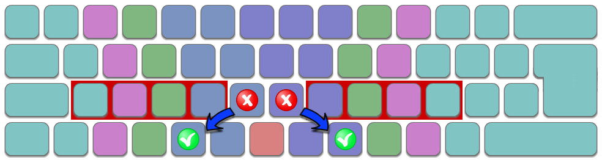

Colemak Mod-DH
A Colemak mod for more comfortable typing.
Colemak Mod-DH
Colemak Mod-DH introduces a minor modification to the Colemak keyboard layout, designed to make typing more comfortable. The resulting layout is commonly known as

Colemak is a great layout, but that doesn't mean it's impossible to improve on! The idea behind Mod‑DH is that by making an adjustment to the placement of a small number of keys, it is possible to gain a significant improvement in ergonomics and comfort. See this comparison of Mod-DH with other layouts.
There are separate implementations optimized for ISO, ANSI and matrix keyboards.
Highlights:- Places the heavily used D and H keys in more comfortable and easier-to-reach positions.
- Moves G to a slightly easier position also, reverting to its placement in Qwerty.
- Reduces usage of the difficult-to-reach centre column by about half.
- Utilizes the "Angle Mod" (see below) to promote a more comfortable, symmetrical typing posture on standard keyboards.
- Retains Colemak's many other strengths, such as its home key placement and low rate of same-finger bigrams.
- No keys change fingers from standard Colemak, making it easy to adopt for existing Colemak users.
The Colemak forum has threads containing some background information to the creation of this mod, and also a more detailed discussion of it.
» Changes From Colemak
The mod consists of two parts, the left-hand "D" change, and the right-hand "H" change.
Changed keys relative to standard Colemak. Note that none of the changes move keys to a new finger. This makes the mod easy to learn and also retains Colemak's excellent stats on same-finger bigrams.
Left Hand Changes
The primary change is to the left hand:
1. The "Angle Mod" is applied to keys Z, X, C. This moves these keys one space to the left but maintains the conventional finger assignment.
2. Three keys are relocated: D, G, B. This makes the D key much easier to type, using your index finger. The position of G is also improves, and reverts to its Qwerty placement. The B key moves from the hard-to-reach position at the bottom-middle to the new location on the top row.
Right Hand Changes
There is a minor change to the right hand:
The H and M keys exchange places. This makes H easier to type, being a more common character than M. Since HE is the second most common bigram in English, it also makes it more comfortable to type several very common words such as "the", "then", "where", etc.
» Changes From Qwerty
Changed keys relative to Qwerty. In total, 19 keys are changed, plus the application of the Angle Mod to an additional 3. Of these, only 12 keys change fingers, same as Colemak.
If you are currently using Qwerty and looking for a better layout, then both standard Colemak and Mod-DH are excellent choices. The change from Qwerty is not easy and can take some time, but is worthwhile in the end. If you start with Colemak but find the frequent reaching for D, H and G unsatisfactory, or find the common HE bigram uncomfortable, then Mod-DH is for you!
» The Angle Mod
The Angle Mod makes it possible to adopt a more comfortable typing posture by introducing a degree of symmetry on a standard, staggered keyboard. The keys along the bottom-left are moved one space to the left, but you should continue to type these keys using the conventional finger assignment, i.e. Z=pinky, X=ring, C=middle, V=index.
The Angle Mod on an ISO keyboard. ANSI keyboards are also supported with a slight variation. Keys are colored by finger assignment.
See also: Guide to the Angle Mod.
The Angle Mod is a good innovation, and has been popular in the Colemak community for almost as long as Colemak itself. But, in its default implementation (affecting all five bottom-left keys), it results in the rare V moving to one of best locations on the keyboard. Mod-DH fixes this by assigning D to that key instead, and utilizes the Angle Mod for Z,X,C only. An important feature of Mod-DH is that on standard keyboards, use of the Angle Mod is intrinsic to the layout design.
» What's wrong with standard Colemak anyway?
For many people, nothing! But others who have tried Colemak have identified flaws, and have found the transition from Qwerty frustrating. Some have even given up on Colemak as a result. I believe that those who experience problems with Colemak need not give up on it. Mod-DH was created to fix the most common complaints, and to give a more comfortable Colemak experience for those who want it.
The most commonly identified flaw is Colemak's placement of the D and H keys. As the 8th and 10th most common letters in English, they should ideally be in easy-to-reach positions. Colemak places them on the centre column, which means a lateral motion of the hand is required to access them. If you try this motion frequently, you'll probably find it is somewhat less comfortable than simply moving the index finger down, to where Mod-DH places those keys. The H-E combination is often cited as a common English bigram that is unduly awkward with Colemak. If you think it's easier for the index finger to reach down one key to the bottom row than to the centre column, then you'll find Mod-DH more comfortable to use.
| left | right | total | |
| Colemak | 7.76% | 7.02% | 14.78% |
| Colemak Mod-DH | 4.49% | 3.31% | 7.80% |
My own experience is that I used standard Colemak for several months, but was unsatisfied with the frequent reaching for the middle of the keyboard to type D and H, and to some extent G. I initially stuck with it, being reluctant to change an established layout and thinking Colemak's other benefits would outweigh its drawbacks. And to be fair, for the most part they do. But I eventually came to realize that in fact there is no need to compromise: By applying Mod-DH, it is possible to keep Colemak's best features, while placing some common letters in easier-to-access locations and reducing the need to reach for the centre column. Within a couple of days using the left-hand "D" mod, I found it to be a noticeable, significant improvement over standard Colemak. And when applying the right-hand "H" mod, common English words containing HE (the, then, where…) become almost effortless.
» Curl Technique
The recommended typing technique for Mod-DH users is to have the hands approach approach the keyboard at an angle, symmetrically, and with wrists straight. The natural home position for the index fingers will tend to hover over the lower part of the T and N keys. It is comfortable to access the D and H keys with a inward curling motion of the index finger. For this reason, Mod-DH is sometimes described as a type of Curl Mod. There is further information in this Guide to Curl. The Colemak D and H keys (indicated by crosses) are moved to the more comfortable positions for the index finger on the bottom row (indicated with ticks).
» Revision History
The original Mod-DH was developed and launched by SteveP in October 2014. Following feedback, a minor revision was made in May 2017, switching the original M and K key positions for standard staggered keyboards. This mapping, with K in the middle row, is now known as
Due to the increasing popularity of ergonomic boards and to ease migration between keyboard types, as well as to simplify the Mod-DH offering, the M-K switch for standard staggered boards was reverted in October 2020.
It is now recommended to use the original release
» Feedback / Issues
- Discuss it at the Colemak Forum.
- Post an issue or question.
» License
The keyboard layout and the implementations are available under the public domain. You have the right to freely use it for any purpose, without any conditions. Attribution is strongly encouraged, but not required.
The downloadable software is provided "as is", without warranty of any kind, express or implied, including but not limited to the warranties of merchantability, fitness for a particular purpose and noninfringement. In no event shall the authors or copyright holders be liable for any claim, damages or other liability, whether in an action of contract, tort or otherwise, arising from, out of or in connection with the software or the use or other dealings in the software.